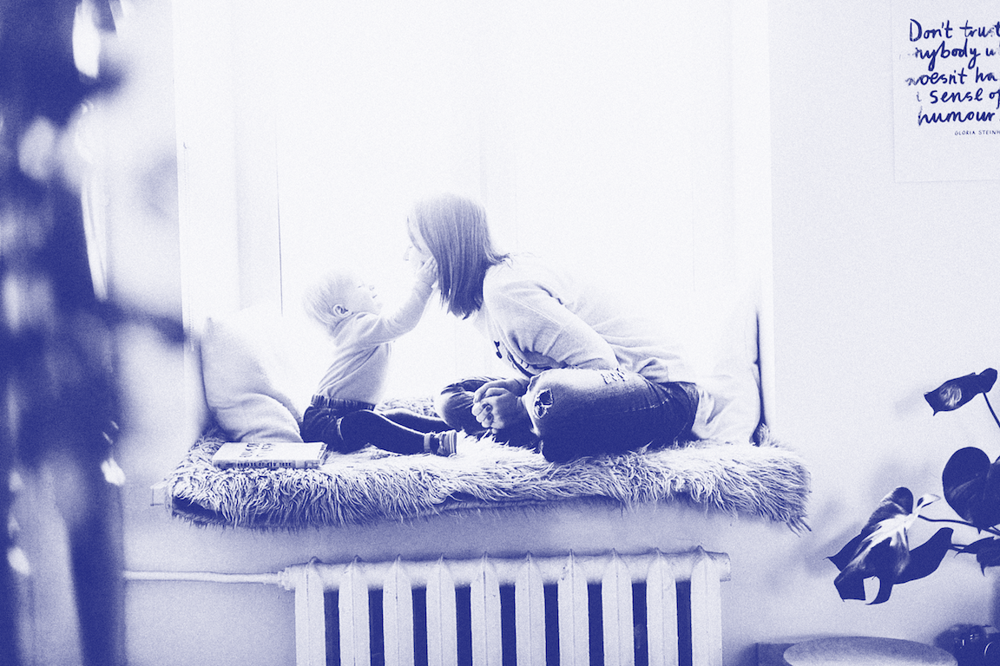

No Brasil, é possível encontrar modelos de vida coletiva espontânea, onde a convivência coletiva é o que agrega valor àqueles que compartilham os espaços. Tenho como exemplo, de vivência pessoal, as repúblicas de estudantes que se conhecem e compartilham espaços e que mudam muitas vezes a maneira como estes vivem por grande parte de suas vidas.
O interessante é entender que no Brasil, esse conceito extrapola as tendências atuais e em cidades como Ouro Preto, a presença desse tipo de moradia é um fator histórico, que remete ao início do século XIX e que se manteve viva durante vários períodos históricos e reuniu diversas gerações de estudantes em um modelo de vida coletiva. Machado descreve as raízes e princípios que guiam esses estudantes a criarem vínculos e relações de cumplicidade e responsabilidade coletiva:
"As repúblicas sempre se constituíram como uma família mais verdadeira que a consangüínea. Isto porque cada um escolhe seu “irmão”. Não há o grupo familiar imposto e muitas vezes detestável. E se o escolhido não é o ideal você o substitui. A comunidade assim formada convive durante anos e anos. E o mais rico nunca leva vantagem. Mas a dignidade de cada um é o que conta para nivelar a vida em comum."
Na minha vivência pessoal, desde o ano de 2012, tenho vivido em casas compartilhadas em diversos formatos. A busca por esse modelo de vivência surgiu à tona quando fui aprovada em uma universidade em outra cidade e me mudei da casa dos meus pais para viver com pessoas (até então) desconhecidas. De lá para cá, vivi 11 residências em 3 países e pude ter mais de 26 colegas de casa. A residência, que é o espaço que abriga a intimidade, o conforto, pode ser o mais difícil de se compartilhar, mas que traz os vínculos mais fortes e as conexões mais verdadeiras.
"É comum se ouvir de antigos alunos que quando as repúblicas possuíam cozinha própria e não havia o Restaurante Universitário, a convivência era maior entre os estudantes e a influência republicana na moldagem das personalidades era completa(...)Isto se constitui na mais expressiva experiência de vida que jamais tive. É notável como estas casas, com mais de um século, mantém acima das leis, em perfeito regime anárquico, uma tradição e coerência. Todos mandam e ninguém obedece."
Para os jovens que acabam de sair da casa da família, o espaço da república é o extravasar da liberdade, porém é também onde é expressada a liberdade coletiva e todos os que ali vivem devem compor um sistema viável e que atenda às necessidades coletivas e individuais. Essa experiência é única e traz questionamentos e experimentos sobre democracia, participação social e coletiva e novas formas de organização.
A criação de micro-comunidades de compartilhamento de residência, surge como uma proposta de solução, que se mostrou eficaz em diversos aspectos e já se popularizou em diversas camadas da sociedade, em diversos países.Porém quais serão as novas necessidades das pessoas que vivem nessa maneira, ou que gostariam de testar uma moradia nesse modelo?